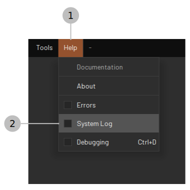
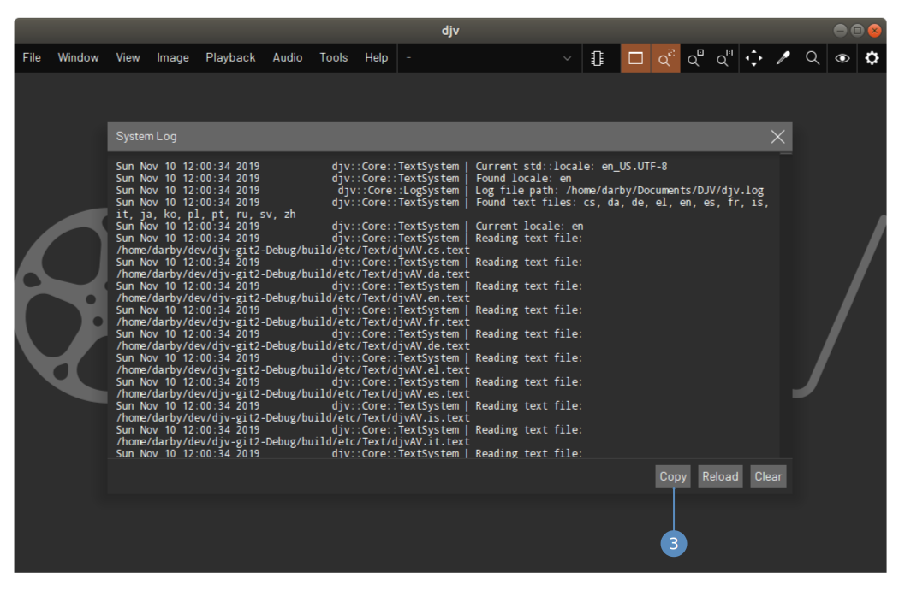

If you find a bug with DJV please report it by creating an issue on GitHub. Describe what led up to the bug and whether or not it is repeatable. Include a copy of the DJV system log by copying and pasting it from the application:


You can also manually copy the log file from the path: "$HOME/Documents/DJV/djv.log".
For new features consider creating an issue on GitHub to provide an opportunity for discussion and feedback about the proposed changes.
The following steps describe an example workflow for contributing code to the project.
Fork the repository using the GitHub website and clone it to your local machine:
git clone https://github.com/you/DJV.git djv cd djv
Add the upstream repository to keep your source code up to date:
git remote add upstream https://github.com/darbyjohnston/DJV.git
Create a new branch for your work:
git checkout -b mychange
Fetch and merge the latest changes:
git fetch upstream git merge upstream/master
Follow the build instructions for Linux, Apple macOS, or Microsoft Windows.
When making your change please follow the coding convention and style of the file you are working in.
Once the change is ready create a pull request on GitHub.
The inital batch of translations for DJV has been machine generated which probably leads to some surprising text in the user interface, apologies in advance. Any help with fixing these translations is greatly appreciated, though unfortunately the workflow is still a bit complicated.
If you are familiar with git the best way to contribute translations would be the same way as contributing code, however for people unfamilar with git the following workflow may also be used.
Locate the translation files you want to edit on GitHub. Note that the translations are split across multiple files corresponding to the library or program they are located in.
Download the files you want to edit and move them to either the DJV documents directory ($HOME/Documents/DJV), or a directory specified with the DJV_TEXT_PATH environment variable. These files will now override the default files installed with DJV.
Start DJV and switch to your desired language in the settings. Open the text files in a UTF8 compatible text editor and start making changes. DJV will monitor the files and automatically reload them so you can see your changes interactively.
When you are finished with your changes create an issue on GitHub and attach the files you have edited.